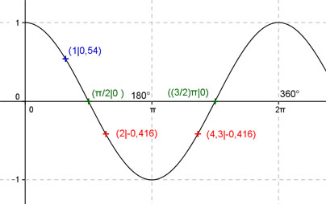
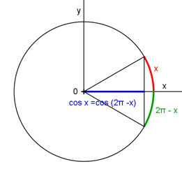

Aufgabe 135 Ergänzen Sie die Wertetabelle für x zwischen 0 und 2π. y = cos (-x) x 1 2 oder 4,3 y 0,54 -0,416 Amplitude = 1 ; Periode = 2π Berechnung der Nullstellen: cos - x = 0 --> Wegen cos (-x) = cos x --> x1 = π/2 oder x2 = (π/2 + π) = (3/2)π N1 liegt bei π/2 oder 90°, N2 bei (3/2)π oder 270°.  Funktionswert an einer Stelle x ermitteln: x = 1 f(1) = cos (-1) = cos (-57,3°) = 0,54 gerundet. Berechnung der x-Werte für y = f(x) = -0,416: f(x) = -0,416 eingesetzt, existiert einmal zwischen 0 und π bzw. 0° und 180° und zwischen π und 2π bzw. 180° und 360° (siehe Graph). cos -x = -0,416 --> -x = arc cos -0,416 = 2 gerundet --> x = -2 oder α1 = -114,6° liegen nicht zwischen 0 und 2π --> Mit cos x = cos (-x) = cos (2π - x) (siehe Einheitskreis) --> x1 = 2 oder x2 = 4,3 gerundet und α1 = 114,6° oder α2 = 245,4°. Einheitskreis, Radius = 1: 